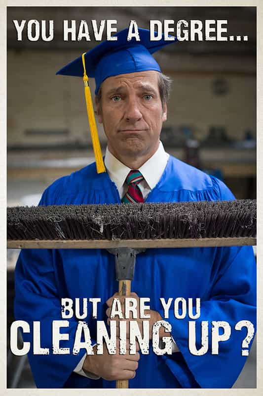

< < < Back
A Mainstream Journalist Takes The Red Pill – Return Of Kings
For the past ten years I’ve drifted around Northern California trying to approximate the life of a freelance magazine writer. Yes I was the proud owner of a journalism degree (from NYU no less) and of course I was gunning for the upper echelons of mainstream media. Outside! Newsweek! Esquire! My blue pill self was convinced I was going to be the next Tom Wolfe. Or, barring that, at least the next Sebastian Junger.
I worked shitty jobs like driving tour busses and pouring wine at various tasting rooms while getting the occasional profile published in the San Francisco Chronicle. Mostly of men I admired or aspired to be like. Celebrity chefs, professional cyclists, war correspondents and such. Red pill guys (before I was even aware of the term) who were focused on their mission and working their asses off to create something larger than themselves. In turn they inspired me to focus on my own mission. I’d spend hours re-typing great pieces of journalism, hoping the talent would seep into me osmotically.
And I never fucked around with ethics, practically freezing to death one fall night in Montana rather than accept a free hotel room when I didn’t have a dollar in my pocket. Work hard. Play by the rules. Eventually the editors in New York would make a place for me at the table. (In retrospect I couldn’t have been more plugged into the matrix.)
I followed my formula assiduously
I worked hard and waited. And after that I waited some more. The years went by and brought with them a disastrous marriage, an ill-fated business venture and a nearly suicidal bout with depression. I all but gave up on journalism. Then, reinvigorated by my divorce and a move to a college town, I decided at 31-years-old to give it one last shot.

While perusing Captain Capitalism’s blog I came across a story about the TV personality Mike Rowe, and his efforts to get kids to sidestep traditional four-year college (and student loan debt hell) in favor of trade school. He had created a slick PR campaign and a work ethic-based scholarship fund to go with it. And he was traveling the country in an attempt to raise awareness and bring it to the next level.
“Holy shit!?” was my immediate reaction. All the ingredients were there. An outspoken, charismatic guy on a quixotic quest to shake up higher education? Who had the audacity to question the time-honored shibboleth that little Johnny just has to go to college in order to be successful? This was huge. A softball lovingly lobbed in my direction by the gods of journalism. It had to be my big break. And sure enough I got the green light from an editor at Men’s Journal, a glossy MSM magazine based in New York City.
Mike was awesome from the start
I tracked him down with the help of my longtime friend and volunteer research assistant Trisha. And we met up at his office in a sound studio in San Francisco, where presumably he was doing voiceovers for a commercial. I only knew him like most other people know him: that crazy guy from the Discovery Channel show Dirty Jobs who, over the space of a decade, crawled through sewers in some 220 different countries cracking poop jokes. (When not narrating Deadliest Catch or extolling the virtues of the latest Ford F-150.)
I found him genuine and likable in way that most celebrities aren’t. And from the moment he opened his mouth it was clear that 1) this guy was really, really smart, and 2) he knew his shit when it came to how our country is going down the drain one offshored factory at a time. He expressed genuine concern for my fellow millennials and our “debt mixed with dashed hopes.” He lamented in his famously deep voice that no parents encouraged their kids to be plumbers anymore. And that the $1 trillion student loan debt bubble is potentially a national security issue.
He was in a time of transition himself, having left behind Dirty Jobs and actively looking for a new show. And he seemed excited by my interest in his mission. I explained to him that I did journalism a bit differently. That instead of meeting up in a restaurant and running through a list of stale questions, I spend weeks, sometimes months, just hanging around and observing. (It’s the only way to truly gain understanding of a story. My personal battle against the thin, baseless gruel that constitutes 99 percent of mainstream journalism.)
He liked my style and invited me to hang out with him at an upcoming Caterpillar conference in New Orleans. We parted ways with a handshake and I remember my head swimming as I stepped out onto the streets of San Francisco. It was by far the most interesting story I had ever come across in my career. And it was mine for the taking.
Men’s Journal pulls out
As Trisha and I did background research and looked into air fares and other logistics, disaster struck. Despite assurance by an editor that the story was a lock, Men’s Journal was pulling out. They had too many short profiles in the works. They were no longer interested. (“Oh by the way, fuck you” being a not uncommon occurrence in the magazine world.) I stared blankly at the email for a few minutes then slowly walked to the freezer and helped myself to a fifth of Jack Daniels. In the drunken haze that constituted the next 36 hours, I must have emailed Mike, saying that I wanted to keep going with the story anyway with the hope of landing it in another national magazine. He responded with the following:
Couple thoughts.
First, I like that you sent this at 3:01 am. No self-respecting freelance writer would be asleep at that time…Secondly, you’re welcome to come to NOLA and see what’s going on without a publisher on board. But before you start paying for plane tickets and hotel rooms out of your own pocket, I’d suggest we meet in person and have a conversation about a more comprehensive piece. Truth is, I’m no more interested in a “short profile” than Men’s Journal is…
Two weeks later I found myself sitting on the floor in Mike’s suite in the Ritz-Carlton, New Orleans, furiously scribbling in my pitman-ruled reporter’s notebook. This after his spending a day meeting with television writers and the president of a billion dollar manufacturing company. He was sitting at a desk, checking emails on his Macbook Pro, while bouncing ideas off his entourage, who had draped themselves over various pieces of furniture around the room. They were trying to hash out the details of a nationwide work ethic-based scholarship to get deserving kids into reputable trade schools. (“Because being poor isn’t enough.”)
Mike periodically lightened the mood by telling stories of the bodily fluids that could be found with a black light on swanky hotel room ceilings. And how it’s a party foul for a man to take a shit in another man’s bathroom. All the while I was working my Droid, emailing my way through a list of magazine editors that Trisha had compiled for me. Vanity Fair? Not interested. GQ? No response. Rolling Stone? Not a chance. Remembering a school connection, I shot Mike an email asking if he’d be comfortable with Playboy. “I won’t pose,” he emailed back from across the room.
Later that month Mike traveled to New York City to make the talk show rounds. Digital voice recorder in hand, I followed him into the NBC Studios at Rockefeller Center. By this time I had worked my way through my entire list of editors and generated not a glimmer of interest. I had maxed out my credit cards on plane tickets and hotel rooms without a payday in sight. I was in full-on desperation mode. And I was still following Mike because I was ignoring the reality that was staring me in the face: the story was DOA.
The “professionalism” of mainstream media
After a lengthy wait in the green room, I sat out of view of the camera while he taped a segment for The Ed Show on MSNBC. (Flirting with a cute production assistant to help pass the time.) I remember marveling at what I saw. That this television show supposedly represented the very pinnacle of my profession. And yet the host spent most of the brief segment ignoring Mike’s quest in favor of goading him for appearing with Mitt Romney on the 2012 presidential campaign trail. “Gotcha journalism” at its best. I shook my head in amazement as I lost my last remaining shreds of respect for mainstream media.
Back out on the street Mike was clearly disappointed, though he remained calm and philosophical. “People watch his show because they want to see a fight,” he said. “He said exactly what his audience want to hear.” His colleague Mary Sullivan told him that 30 people unfriended him on Facebook since the segment aired a few minutes earlier, but 150 people had added him. He nodded his head and gamely signed a few autographs for passersby before we crawled into the back of a chauffeured black Chevy Tahoe.
Instead of going back to the hotel Mike said that we were making a brief detour to have a “chat” at a restaurant around the corner. “Oh shit,” I remember thinking to myself. This was where I was going to get my ass chewed out for having wasted his time. As I glumly exited the back of the SUV I noticed several people dressed in character wandering up and down the streets in advance of New York Comic Con. And as we went inside and seated ourselves at a table, I braced myself for the tongue-lashing that was sure to come. But it never did. Instead of reaming me out, Mike basically offered to call it a day and compensate me for the expenses I’d racked up to that point. He felt sorry for me. Though I didn’t take him up on his offer, I was overwhelmed by his generosity.
That night I opened up my email to find a note from one of my old NYU professors. I knew he was connected to The Atlantic among other magazines and I had sought his advice. His response was this:
Dorsey,
I have to be honest with you, I don’t think this is a very interesting story. I’d drop it and cut your losses…
It was the last straw
After drunkenly partying away my remaining days in NYC, I went home to the realization that basically everything I had been working for up to that point was based in a lie. My “degree” was an expensive joke. Mainstream journalism was dead. And regardless of the quality of our ideas or our work ethic, guys like me weren’t getting a shot. That place at the table I so coveted was being reserved for the twenty-something nitwits who perpetrated the 20/20 manosphere hack job. And in typical blue pill fashion I let my life fall apart. I lost my part-time job, my friendship and working relationship with Trisha, and did my best to keep the corner liquor store in business.
But over time, and with considerable help from the wise voices of the manosphere, I began to pull myself together. Yes, our current world is pretty much shit. And men (and women) are fed lies from the day we’re born. But waking up to that fact, be it at age 16 or 65, is the first step in extricating oneself from the matrix. We can strive to be like Mike and do our best to stick with our mission and fight the pretty lies and the powers of evil. The student loan pushers. The money printers. The misandrists.
As for me? I’ve said fuck you to mainstream journalism. I’m sure I’ll submit a story here or there for rent money. But that’s as deep as it goes. Now I’m searching for a clever pseudonym and thinking about ways I can contribute to the manosphere. Oh yeah, and I signed up for a welding class at my local craft center. Perhaps I learned something from my experience with Mike after all.
Read More: The Price Of Taking The Red Pill


{kind=link}